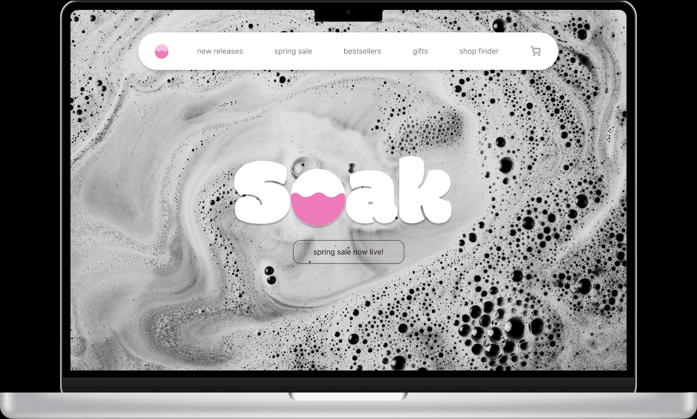

A fictional bath bomb brand with one job: feel like water and still get someone to checkout. I mapped the shopping journey, contributed to identity, and helped take the prototype through usability tests.
Identity — round type, a waterline in the O, nothing shouting.
Role
Flows, branding, testing
Team
Collaborative course project
Platform
Responsive web
Output
Hi-fi Figma prototype
The brief
Build a storefront that could sell a sensory product through a screen. Bath bombs are color, scent, and fizz — none of which a laptop has. The team’s answer was photography as the interface, type as the product name, and a shopping path that didn’t make you fill out your life story to buy soap.

Home — navigation as a quiet pill, brand as the hero, texture doing the talking.
My part
Mapped the shopping and checkout journey so discovery, product, and pay felt like one path.
Contributed to logo, color, and how the brand should sit on packaging and screen.
Built high-fidelity frames and ran usability sessions on findability and checkout length.
Choices that mattered
01
Let the photo carry mood.
UI stays thin on purpose. If the chrome gets louder than the water, the brand collapses into a generic shop template.
02
Product cards should smell like something.
Hover states and scent copy are not decoration here — they’re the substitute for picking a bomb up in a store.
03
Shorten checkout.
Every extra field is a reason to abandon a low-cost impulse buy. We cut input until the path felt slightly too easy, then checked that it still felt trustworthy.
A note on contrast
The floating nav is elegant and a little too light. In a later pass I would darken the link gray and add a real primary CTA on the hero — “Shop the bath” — so first-time visitors are not left admiring bubbles. Visual design class taught me atmosphere. UX work is making sure atmosphere still has a door.